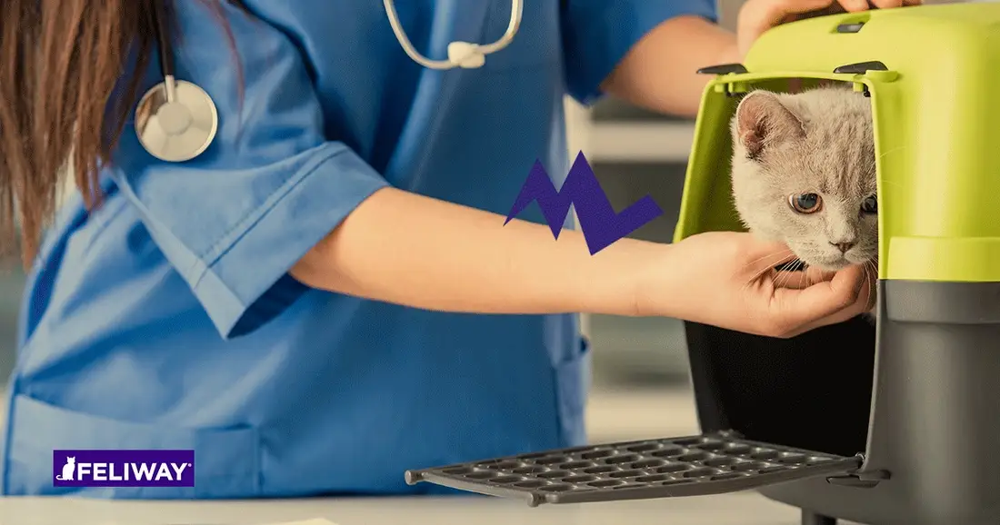

ACERCA DE NOSOTROS

1NUESTRA MISIÓN
Brindar a los Pacientes y a sus Familiares servicios dignos con calidez y excelencia para otorgar los mejores tratamientos médicos hospitalarios, adquiriendo habilidades, destrezas y uso de nuevas tecnologías en la Práctica de la Medicina Veterinaria a los estudiantes de Licenciatura y Posgrado.
2NUESTRA VISIÓN
Formar profesionales con calidad, competentes y éticos, los cuales a través del pensamiento crítico y constructivo diagnosticarán y resolverán los problemas del bienestar y la salud animal, la salud pública y los del sector agropecuario, de manera comprometida con el desarrollo equitativo, social y sostenible.